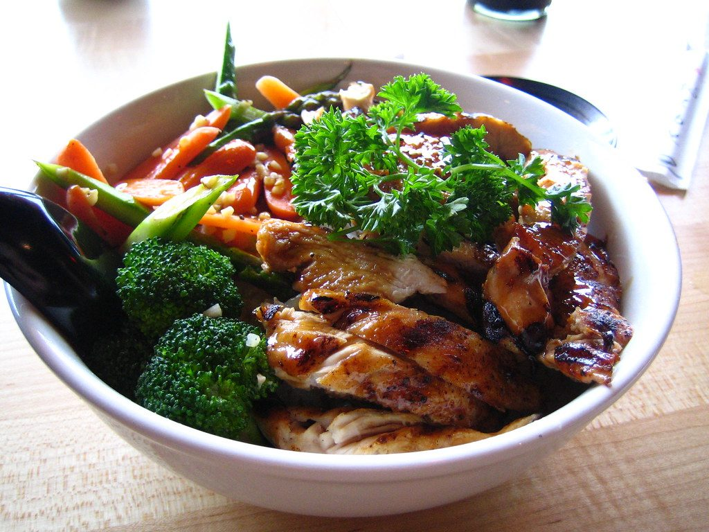
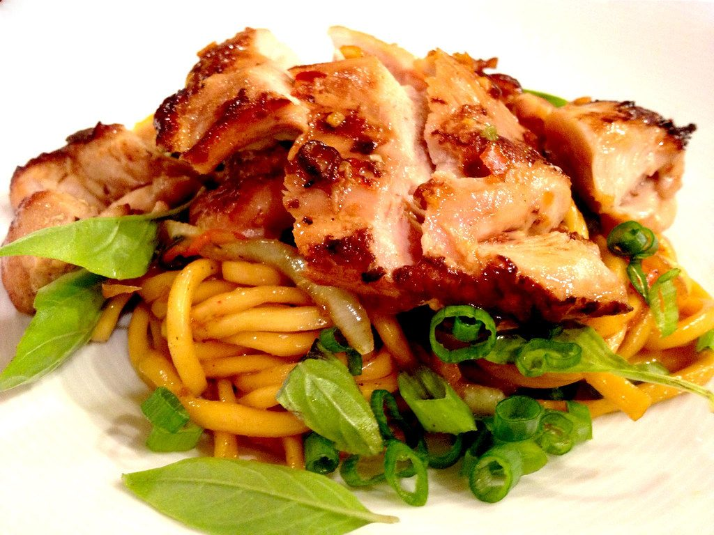

30-Minute Chicken Meal Prep: 5 High-Protein Recipes
Five ways to turn a pack of chicken breasts into a week of lunches — each one ready in 30 minutes or less, with 38–44 g of protein per serving.

Teriyaki chicken rice bowls — the most-pinned recipe in this collection.
Chicken breast is the meal prepper's best friend: cheap, lean, and it takes on any flavor you give it. The trick is cooking it so it stays juicy on day four. Every recipe below follows the same rules — don't overcook it (165°F / 74°C and out), rest it 5 minutes before slicing, and keep sauces separate until you're ready to eat.
Each recipe makes 4 servings. Cook two on Sunday and you've got lunches covered through Thursday. All five are part of the 7-day high-protein meal prep plan.
One shopping note: each recipe starts with 1½ lb of chicken. Buy a family pack (3–4 lb) and cook two recipes in one session — the oven and the skillet can run at the same time.
1. Garlic Herb Grilled Chicken with Roasted Sweet Potatoes
The simplest recipe here, and the one people come back to. Garlic, oregano, and thyme do all the work.
Garlic Herb Grilled Chicken
Ingredients
- 1½ lb boneless, skinless chicken breasts
- 2 large sweet potatoes, cubed
- 12 oz green beans, trimmed
- 2 tbsp olive oil
- 4 cloves garlic, minced
- 1 tsp dried oregano, 1 tsp dried thyme
- 1 tsp salt, ½ tsp black pepper
Steps
- Heat the oven to 425°F (220°C). Toss the sweet potatoes with 1 tbsp oil and half the salt; roast 15 minutes.
- Meanwhile, mix the remaining oil with the garlic, oregano, thyme, salt, and pepper; rub over the chicken.
- Add the green beans to the pan and place the chicken on top. Roast 15–18 minutes until the chicken reaches 165°F (74°C).
- Rest 5 minutes, slice, and divide into 4 containers.
| Calories | Protein | Carbs | Fat |
|---|---|---|---|
| 480 | 42 g | 38 g | 16 g |
2. Teriyaki Chicken Rice Bowls
Sticky, sweet, and salty — the sauce is four ingredients and takes 3 minutes. Thighs stay juicier than breasts here, so this is the one recipe where we use them.
Teriyaki Chicken Rice Bowls
Ingredients
- 1½ lb boneless, skinless chicken thighs
- ⅓ cup soy sauce, 3 tbsp honey
- 1 tbsp rice vinegar, 1 tsp grated ginger
- 2 cloves garlic, minced
- 1 tsp cornstarch mixed with 1 tbsp water
- 2 cups cooked jasmine rice
- 2 heads broccoli, steamed
- 1 tbsp sesame oil; sesame seeds and sliced green onions, to serve
Steps
- Whisk the soy sauce, honey, vinegar, ginger, and garlic in a small bowl.
- Cook the chicken in sesame oil in a large skillet over medium-high heat, 5–6 minutes per side, until cooked through. Rest 5 minutes, then slice.
- Pour the sauce into the same skillet and simmer 2 minutes. Stir in the cornstarch slurry and cook until glossy, about 1 minute.
- Return the chicken to the pan and toss to coat. Divide the rice, broccoli, and chicken into 4 containers. Top with sesame seeds and green onions.
| Calories | Protein | Carbs | Fat |
|---|---|---|---|
| 560 | 38 g | 62 g | 15 g |

Short on rice? These chicken recipes work just as well over noodles.
3. Buffalo Chicken Burrito Bowls
For people who think meal prep is bland. The Greek yogurt drizzle cools the buffalo heat and adds another 5 g of protein.
Buffalo Chicken Burrito Bowls
Ingredients
- 1½ lb boneless, skinless chicken breasts
- ⅓ cup buffalo hot sauce, 1 tbsp butter
- 2 cups cooked cilantro-lime rice
- 1 can (15 oz) black beans, drained and rinsed
- 1 cup frozen corn, thawed
- ½ cup plain Greek yogurt
- Juice of 1 lime; salt and pepper
Steps
- Poach or bake the chicken until it reaches 165°F (74°C), about 18 minutes. Shred with two forks.
- Warm the buffalo sauce with the butter in a skillet; toss the shredded chicken in it.
- Stir the lime juice into the rice. Mix the Greek yogurt with a pinch of salt to make the drizzle.
- Divide the rice, beans, corn, and buffalo chicken into 4 containers. Pack the yogurt drizzle separately.
| Calories | Protein | Carbs | Fat |
|---|---|---|---|
| 540 | 40 g | 52 g | 17 g |
4. Lemon Pepper Chicken with Broccoli & Quinoa
The highest-protein recipe in this set, thanks to the quinoa. Bright, fresh, and it doesn't taste like "diet food."
Lemon Pepper Chicken with Broccoli & Quinoa
Ingredients
- 1½ lb boneless, skinless chicken breasts
- Zest and juice of 2 lemons
- 2 tsp black pepper, 1 tsp garlic powder, 1 tsp salt
- 2 tbsp olive oil
- 2 cups cooked quinoa
- 2 heads broccoli, cut into florets
Steps
- Heat the oven to 425°F (220°C). Toss the broccoli with 1 tbsp oil and a pinch of salt; roast 12 minutes.
- Mix the lemon zest, lemon juice, pepper, garlic powder, salt, and remaining oil; marinate the chicken 10 minutes.
- Grill or pan-sear the chicken 6–7 minutes per side until it reaches 165°F (74°C). Rest 5 minutes and slice.
- Divide the quinoa, broccoli, and chicken into 4 containers. Squeeze extra lemon over the top before sealing.
| Calories | Protein | Carbs | Fat |
|---|---|---|---|
| 510 | 44 g | 40 g | 17 g |
5. BBQ Chicken & Black Bean Bowls
Smoky and sweet, and the black beans push the fiber up with the protein. Use a BBQ sauce with less than 8 g of sugar per serving if you can find one — it makes a real difference across a whole week.
BBQ Chicken & Black Bean Bowls
Ingredients
- 1½ lb boneless, skinless chicken breasts
- ½ cup BBQ sauce, 1 tbsp olive oil
- 2 cups cooked brown rice
- 1 can (15 oz) black beans, drained and rinsed
- 1 cup frozen corn, thawed
- ½ red onion, diced
- 1 tsp smoked paprika; salt and pepper
Steps
- Rub the chicken with oil, smoked paprika, salt, and pepper.
- Grill or pan-sear 6–7 minutes per side. Brush with BBQ sauce in the last 2 minutes of cooking.
- Rest 5 minutes, then slice. Warm the beans and corn together in a small pot with a pinch of salt.
- Divide the rice, beans and corn, and chicken into 4 containers. Drizzle with the remaining BBQ sauce.
| Calories | Protein | Carbs | Fat |
|---|---|---|---|
| 580 | 41 g | 64 g | 15 g |
How to Store Chicken Meal Prep
- 4 days in the fridge is the safe window for cooked chicken. Freeze anything you'll eat on day 5 or later.
- Reheat gently: microwave at 70% power for 2–3 minutes, covered, with a splash of water. Full power dries chicken out fast.
- Sauce on the side: teriyaki, buffalo, and BBQ sauces all go in small containers and get added after reheating.
- Slice, don't shred (except the buffalo bowls) — sliced chicken reheats more evenly and stays juicier.
Good containers matter as much as the recipe. Our container guide covers the glass sets we use for all five of these recipes, and the 7-day plan shows how to rotate them through a full week.